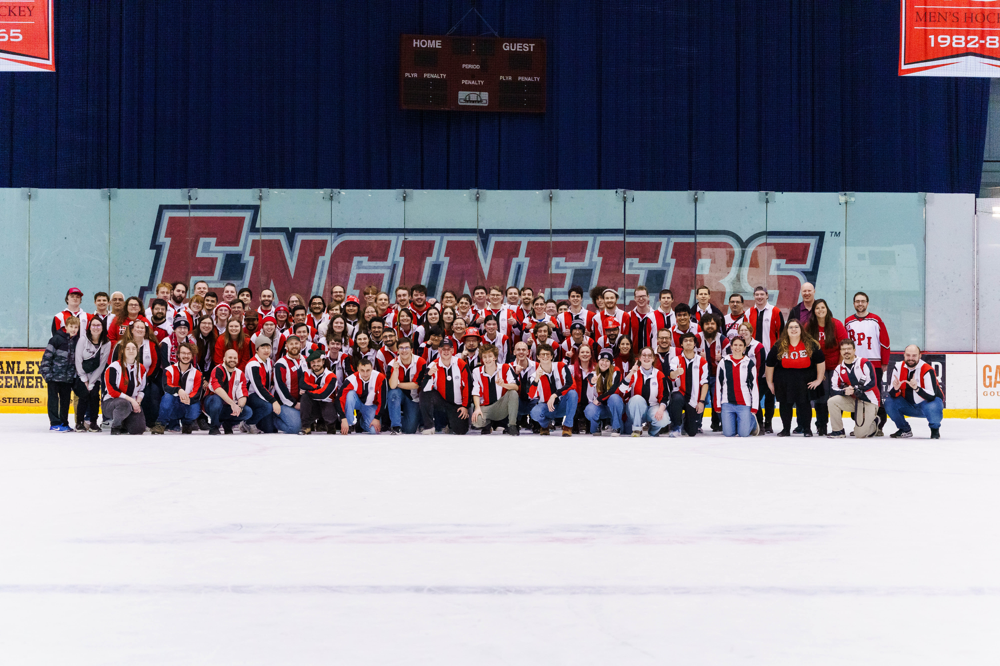

Freakout 2025 (Feb 1)
Oh boy, 2025 was looking rough so far. For the past four months, the Engineers have been afraid of winning in the Field House, where our only home win was the same day as Shoes last semester. That was like 3 months ago. Alright Red there are 4000 people here tonight, no pressure.
Luckily, here they come in their solid red uniforms! Look at Yale in their boring jerseys...yikes.

Only a few minutes in, we did not look so good on the ice.. Sadly it's not RPI home game unless the other team scores first. With a minute left in the first period, this was about to be a letdown...until Jake Gagnon scores with 30 seconds left! And we have a hockey game on our hands!

Going into the second period, Yale scores again, but RPI was not having it, as we reciprocate shortly after! Cue the Harvard reject chants. But we aren't content ending the second period with a tie, and with a buzzer beater we SCOOOOORE WITH 3 SECONDS ON THE CLOCK!

We play an orchestral alma conducted by Clarissa, then it's off to the thid period. It's a scary one, and there are only so many universes where we can keep this lead. Two minutes left and Yale pulls their goalie, and it's all up to Red to LOCK IN. All we can do is catch glimpses of the puck being shot at Giesbrecht, right until it flies out of the chaos, Toward Yale's Net, CLOOOSER, AND IT'S IN!!!! THE BULLDOG'S FATE IS SEALED. The Field House is electric, and with another empty netter, it's an RPI WIN 5-2!!

Weirdly, enough this same Freakout game happened in 2011...

Afterward it was time for the big race on the ice. RPI may have won, but the real winners? THE BAND. (and RPI let's go red)
